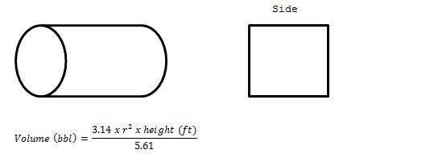
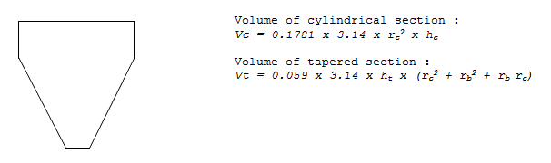

Rectangular Tanks With Flat Bottoms
Side End
Case 1 : Determine the total capacity of a rectangular tank with
Flat bottom using the following data :
Length = ft
Width = ft
Depth = ft
Case : Determine the capacity of this same tank with only ft Of fluid in it :
Rectangular Tanks with Sloping Sides :
side
end
Case : Determine the total tank capacity using the following data :
Length = ft
Width1 (top) = ft
Width2 (bottom) = ft
Depth = ft
Circular Cylindrical Tanks

Case : Determine the total capacity of a culindrical tank with the
following dimensions :
Height = ft
Diameter = ft
Tapered Cylindrical Tanks

Where, Vc = volume of cylindrical section (bbl)
rc = radius of cylindrical section (ft)
hc = height of cylindrical section (ft)
Vt = volume of tapered section (bbl)
ht = height of tapered section (ft)
rb = radius of bottom (ft)
Case : Determine the total volume of a cylindrical tank with the
following dimensions :
Height of cylindrical section = ft
Radius of cylindrical section = ft
Height of tapered section = ft
Radius at bottom = ft
Horizontal Cylindrical Tank
Case : Determine the total volume of the following tank :
Length = ft
Radius = ft
Case : Determine the volume if there are only feet of fluid in
This tank :
Length = ft
Radius = ft
To convert volume ft3 to barrels, multiply by 0.1781
To convert volume ft3 to gallons, multiply by 7.4805
Therefore, 2 feet of fluid in this tank would result in :
Volume (bbl) = ft3 x 0.1781
=
NOTE : This is only applicable until the tank is half full (r – h). After
that, calculate total volume of the tank and subtract the empty
space. The empty space can be calculated by h = height of empty
space.